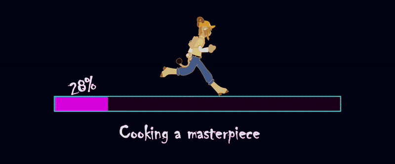

Hail, noble traveler! You’ve crossed the threshold into the realm of Wanwix, where dreams and digital artistry intertwine. Here, the fruits of my labor rest, awaiting discovery by curious souls like yours. Join me on this grand adventure through my creations, my dreams, and my unyielding desire to craft the extraordinary. Let the journey begin!
"A spark defies the darkness, and so do I."